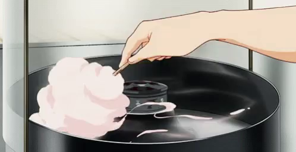

Cotton Candy
He isn't called Tony Tony Chopper "Cotton Candy Lover" for no reason.
Everyone can relate to Choppers love for cotton candy as
the treat can send many into a daze
Ingredients
- Sugar
- Corn syrup
- Water
- Salt
- Raspberry, lemon, almond, vanilla, or other extract or oil for flavoring
- Food coloring
- Cooking spray or vegetable oil
- Candy thermometer
- Parchment paper
Steps

Credit
- You'll be spinning the sugar on parchment paper, so clear some space on a counter or table.
You may want to lay down plastic wrap or newspaper underneath the parchment paper to prevent messes with the hot, sticky sugar.
- Combine ingredients and heat to 320 degrees.Mix the sugar, corn syrup, water, and salt in a large heavy-bottomed pot, then stir over medium-high heat until all the sugar is melted.
Use the thermometer to make sure the mixture has reached 320 degrees.
- Transfer sugar mixture into a large heat-safe bowl.This will keep the sugar from continuing to cook and burn.
- Spin the cotton candy and work quickly!Dip the tines of your whisk into the mixture, then quickly drizzle the thinning sugar strands back and forth across the parchment paper until you have a sizeable “nest” of candy strands.
The sugar will start to thicken after about 10 minutes but can be microwaved to return it to the right consistency.
From here, you can either eat the cotton candy in clumps or spin it onto lollipop or popsicle sticks.
- Serve and enjoy!Depending on the cotton candy recipe you use, your cotton candy can be eaten from sticks or cones, on ice cream or other desserts, or even by hand.